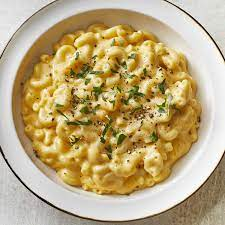

This recipe tells you step by step, exactly how to make quick and easy Macaroni and Cheese.
For this recipe you will need:
- 1 (8 ounce) box elbow macaroni
- 1/4 cup butter
- 1/4 cup all-purpose flour
- 1/2 teaspoon salt
- Ground black pepper to taste
- 2 cups milk
- 2 cups shredded Cheddar cheese
Directions:
- Bring a large pot of lightly salted water to a boil.
- Cook elbow macaroni in the boiling water, stirring occasionally until cooked through but firm to the bite.
- At the same time, melt butter in a saucepan over medium heat. Add flour, salt, and pepper and stir until smooth.
- Pour in milk slowly, while stirring continuously.
- Continue to cook and stir until mixture is smooth and bubbling, about 5 minutes, making sure the milk doesn't burn.
- Add Cheddar cheese and stir until melted.
- Drain macaroni and fold into cheese sauce until coated.